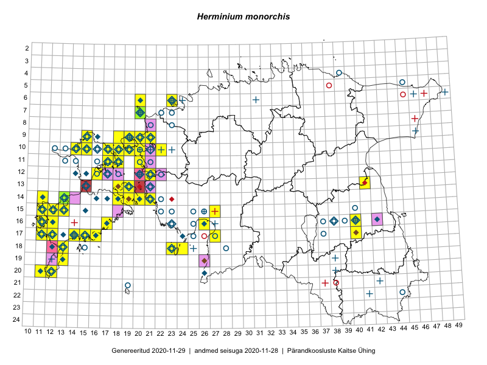

Herminium monorchis
Uuendatud: 2016-12-01
Kaardile koondatud taksonid: Herminium monorchis (L.) R.Br.

Kaart põhineb 67 kirjel.
Kuvatud viited 20 esimesele andmebaasikirjele, ülejäänud PlutoFis
- Toomas Kukk, Peedu Saar: 2015-08-05: 20-11: ala
- Toomas Kukk: 2015-08-06: 20-11: GPS punkt
- Meeli Mesipuu, Kadri Tali: 2015-07-06: 16-17: ala
- Triin Reitalu, Mari Reitalu: 2015-06-29: 15-11: ala
- Triin Reitalu, Mari Reitalu: 2015-06-29: 15-11: GPS punkt
- Mari Reitalu, Triin Reitalu: 2015-08-19: 16-11: ala
- Mari Reitalu: 2014-05-18: 15-11: ala
- Mari Reitalu, Triin Reitalu: 2015-08-14: 14-13: ala
- Mari Reitalu, Triin Reitalu: 2015-08-18: 16-12: ala
- Mari Reitalu, Triin Reitalu: 2015-08-18: 16-12: GPS punkt
- Mari Reitalu, Oliver Parrest: 2015-07-14: 14-11: ala
- Mari Reitalu, Oliver Parrest: 2015-07-21: 14-13: ala
- Mari Reitalu, Oliver Parrest: 2015-07-16: 15-11: ala
- Mari Reitalu: 2014-06-14: 18-13: ala
- Triin Reitalu, Mari Reitalu: 2015-08-09: 16-11: ala
- Triin Reitalu, Mari Reitalu: 2015-08-09: 16-11: GPS punkt
- Mari Reitalu, Triin Reitalu: 2015-08-05: 17-11: ala
- Mari Reitalu, Triin Reitalu: 2015-06-24: 17-11: ala
- Mari Reitalu: 2015-07-08: 16-12: ala
- Meeli Mesipuu: 2015-06-27: 16-26: ala